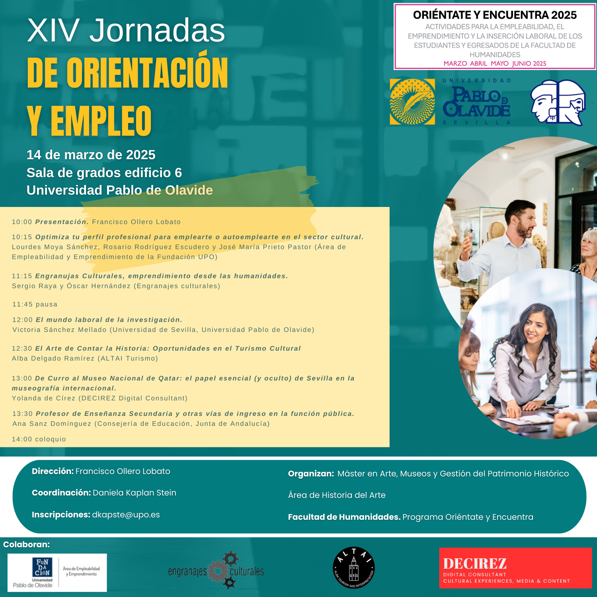

XIV Jornadas de Orientación y Empleo
Publicado el 20 de septiembre de 2026
En este evento participarán técnicas de empleo y emprendimiento de la Universidad, así como representantes de empresas e instituciones, y egresados del máster que actualmente se encuentran desempeñando su labor en el campo del patrimonio y la gestión cultural. Durante las jornadas, se abordarán temas clave como las necesidades del mercado laboral, estrategias para enfrentarse a él de manera efectiva, las diferentes opciones disponibles para la inserción laboral, y se compartirán experiencias del ámbito del patrimonio y la gestión cultural.
El evento será el viernes, 14 de marzo, de 10:00 a 14:30 h, en la Sala de Grados del edifico 6.

Requisitos y plazos de inscripción
Los estudiantes interesados podrán consultar los perfiles demandados y enviar sus candidaturas directamente a través de la sección de empleo. Puedes revisar los detalles generales en la web oficial de la Universidad.